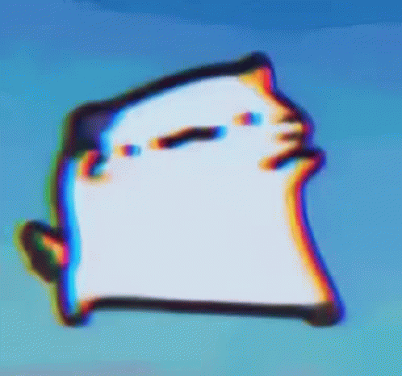

Expérience
-Music Learning Collective - Professeur de Batterie
Professeur dans le cadre de cours individuels avec une grande variété d’âge.
-Les Studios du Cours - Accompagnateur Pédagogique
En charge de guider les élèves passant leur diplôme d’état de professeur de danse, aussi bien au niveau théorie musicale qu’en pratique.
-Divers groupes de musique - Batteur
Batteur dans plusieurs groupes se produisant dans la région PACA, dans divers styles.
Formation
Lycée Montgrand - Bac L spé musique
Compétences
- Expérience du travail en groupe.
- Bonne maîtrise des logiciels de MAO.
- Gestion de matériels scéniques.
- Bonne maîtrise de l'anglais.
Hobbits
- Musique
- Sport
- Jeux-vidéos
Contact
raphael.rossignol@laplateforme.io